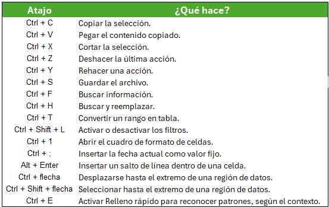
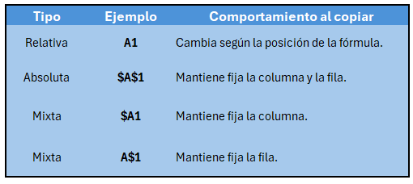
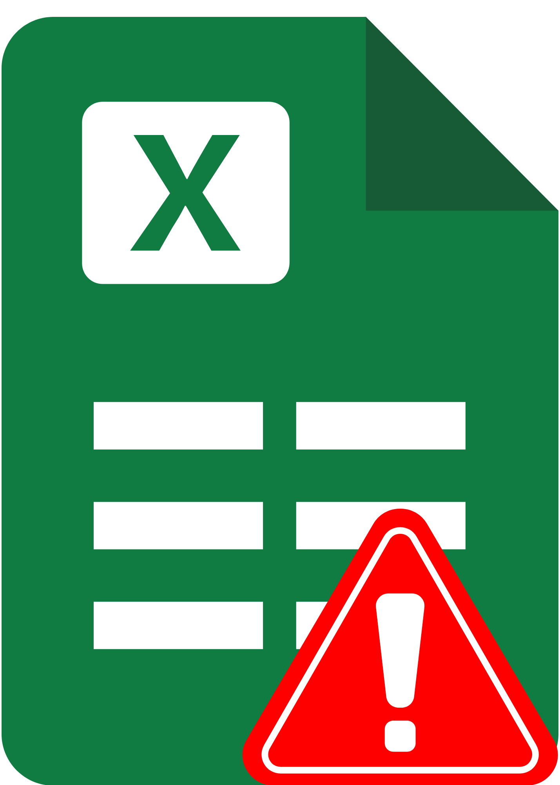

Consejo: no necesitas memorizar todos los atajos de inmediato. Empieza por los que utilizas a diario y agrega nuevos conforme los necesites.

Suma los valores de un rango.
Calcula la media aritmética.
Devuelve el valor máximo.
Devuelve el valor mínimo.
Cuenta las celdas que contienen números.
Cuenta las celdas que no están vacías.
Devuelve un resultado según se cumpla o no una condición.
Suma los valores que cumplen un criterio.
Cuenta las celdas que cumplen un criterio.
Calcula el promedio de los valores que cumplen un criterio.
Devuelve un resultado alternativo si una fórmula genera un error.
Busca un valor y devuelve el dato correspondiente de otra columna o rango.
Une textos de diferentes celdas o valores.
Extrae caracteres desde el inicio de un texto.
Extrae caracteres desde el final de un texto.
Extrae una parte específica de un texto.
Elimina espacios sobrantes entre palabras, excepto los espacios individuales.

No todos los errores tienen una única causa. Revisa la fórmula y sus datos antes de sustituir un error por un valor alternativo.